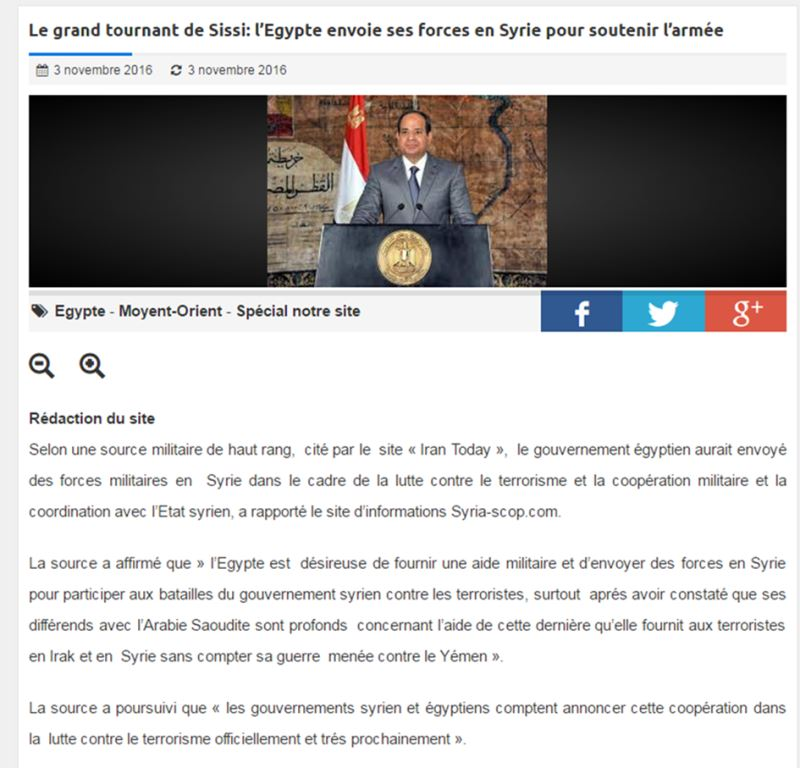
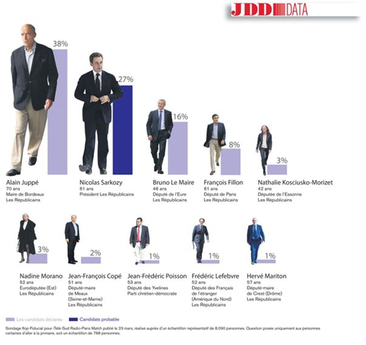

Depuis le vote du Brexit au Royaume-Uni le 24 juin dernier, tout se passe comme si l’agenda de la mondialisation semblait abandonné ou en tout cas avait du plomb dans l’aile.
En effet, si la perfide Albion elle-même, matrice historique de l’idéologie anglo-saxonne, abandonne le navire européen englué dans la crise migratoire et financière, alors on peut se dire à tout le moins que l’on assiste à un changement stratégique fondamental de la part de ceux qui visent à la gouvernance globale. En effet, alors que les archives déclassifiées de la CIA en 20001 ont révélé les liens étroits entre les présumés « Pères de l’Europe » Jean Monnet et Robert Schuman avec leurs maîtres anglo-saxons2 on peut légitimement se demander quel est l’intérêt des mondialistes de laisser à la dérive un instrument précieux de contrôle et d’asservissement des peuples.
Mais si l’oligarchie anglo-saxonne, du moins une partie d’entre elle, a joué la carte du Brexit et la victoire de Trump3, nous nous trouvons alors avec ce constat dans le cas de figure idéal pour aveugler les esprits et tromper les analystes les plus lucides et les plus circonspects.
Et de fait, depuis la sortie - théorique pour l’instant - du Royaume-Uni de l’Union européenne, de la victoire de Trump et de celle de Fillon, la Toile anticonformiste et la presse alternative chantent les louanges de ce qui apparaît comme un changement radical de paradigme et vis-à-vis duquel je suis beaucoup plus dubitatif.
1/ Commençons par le Brexit
Objectivement, le départ des Godons4 des institutions bruxelloises ne peut que réjouir tout défenseur des patries charnelles quand on connait le rôle qu’a joué l’Angleterre dans la majorité des guerres qui ont déchiré l’Europe et cela depuis la victoire éclatante des armes françaises sur l’Anglois à la bataille de Castillon le 17 juillet 1453. Je crois, toute plaisanterie mise à part, que la couronne britannique n’a toujours pas accepté cette défaite et plus largement son éviction du continent, et que toute sa géopolitique des siècles ultérieurs a prouvé que non seulement elle entendait reprendre la main sur les destinées de la France et de l’Europe, mais au-delà, lorsqu’elle en eût les moyens après les Grandes découvertes5, et surtout après la révolution industrielle, sur les affaires du monde lui-même.
Pour ce faire, elle a su combiner la suprématie maritime avec la domination financière, théorisée au XVIème S. par le navigateur anglais Sir Walter Raleigh qui, le premier, s'était exprimé ainsi : « Qui tient la mer tient le commerce du monde ; qui tient le commerce tient la richesse ; qui tient la richesse du monde tient le monde lui-même ».
Mais revenons au Brexit. Ma conviction, est que la pointe de la pyramide de l’oligarchie britannique – pas le lecteur de base du Times - a récemment pris acte de l’échec des néo-conservateurs étatsuniens pour achever la prise de contrôle total du monde après l’écroulement de l’Union soviétique.
En effet, le monde anglo-saxon a eu une fenêtre de tir relativement courte à l’échelle de l’Histoire – 1991/2000 - pour achever la prise de l’Eurasie par la chute définitive de Moscou. Pourtant, entre Gorbatchev et Eltsine, les maîtres de la finance mondiale ne pouvaient rêver meilleurs partenaires pour mettre le dernier pays libre du continent eurasiatique à genou. Et de fait, entre le pillage des richesses, l’amputation des territoires et l’inoculation à haute dose du poison libéral dans les veines slaves, tout a été mis en œuvre pour achever le rêve fou des adeptes de la gouvernance mondiale.
Mais au tournant du millénaire, la Russie s’est réveillée, lentement, et a commencé très progressivement, à prendre conscience du fait que les « partenaires » occidentaux ne souhaitaient pas tant un partenariat qu’une reddition en bonne et due forme. Certains auteurs anti-conformistes, comme Pierre Hillard, nonobstant la qualité de leurs travaux, pensent toujours que les dirigeants Russes sont de mèche avec le Système. Je pense quant à moi que la réalité est plus complexe et plus précisément doit s’analyser dans le temps. Que Vladimir Poutine par exemple - bien qu’avouant une totale aversion pour toute idéologie - ait émergé de l’école « libérale » du KGB ne fait aucun doute6.
Mais ma conviction est que la géographie d’abord, l’histoire ensuite, puis la découverte progressive de la volonté irrépressible des Anglo-saxons d’asservir le dernier peuple libre sur le continent eurasiatique, a conduit Vladimir Poutine, et avec lui la majorité du peuple russe, à prendre conscience des véritables enjeux et à commencer à imaginer une alternative à l’idéologie occidentale. Voir à ce sujet le remarquable article d’Alexandre Douguine sur le césarisme7.
Ce réveil de la Grande Russie et la formidable modernisation de l’armée russe8 opérée en l’espace d’une décennie, a sonné le glas des espérances anglo-saxonnes et néo-conservatrices de parachever la conquête militaire du monde dans des délais brefs en imposant leur présumée supériorité technologique.
Quel rapport toutes ces histoires ont-elles à voir avec le Brexit ? Eh bien tout simplement que lorsque le Système se heurte à des résistances qu’il ne peut vaincre, il utilise un chemin détourné pour parvenir à ses fins. Ayant pris acte de la supériorité militaire russe sur la technologie occidentale, et notamment étasunienne, il revient à ce qu’il sait faire le mieux, de l’ingénierie financière et c’est ce que la City a commencé à faire avec les DTS9.
Pour bien comprendre la logique du Système, il faut garder en permanence à l’esprit que l’oligarchie, le NOM, la super-classe mondiale, les initiés, la haute finance, appelez-les comme vous voulez, poursuivent toujours le même but, et cela depuis des siècles, génération après génération : parvenir au contrôle total de toute l’humanité. Le Brexit doit donc être vu non pas comme une libération d’un peuple des griffes de la mondialisation, mais simplement comme une pause, ou plutôt comme une réorientation de la stratégie des véritables donneurs d’ordres.
On peut pousser les supputations encore plus loin et imaginer par exemple que la sordide affaire Strauss-Kahn au Sheraton de New-York en 2011 relèverait des prémices de ce que nous voyons éclore aujourd’hui de manière plus nette. On se rappellera que l’ancien directeur du FMI et en accord avec certains de ses mandants, poursuivait une politique de mise en place des droits de tirages spéciaux10 en liaison étroite avec la Chine et la Russie et dans laquelle la Lybie devait jouer un rôle initial important, grâce à sa politique africaine et au poids que représentaient ses réserves financières à travers ses fonds souverains.
Mais si la mise en place de ces fameux DTS arrangeait la Chine et un certain nombre de pays émergents, qui souhaitaient ainsi sortir de l’emprise du dollar, il est évident que l’oligarchie étatsunienne ne pouvait voir d’un bon œil lui échapper la suprématie du dollar qui lui assure une prédominance sur la finance mondiale.
On peut donc supputer que la chute du patron du FMI relèverait d’un affrontement entre la City et Wall Street et que DSK serait la première victime d’envergure dans ce qui peut parfaitement s’analyser comme une scission dans le camp de la globalisation, et dans ce combat fratricide, dans tous les sens du terme, c’est Wall Street et le complexe militaro-industriel étatsunien qui a remporté la première manche. Et cette victoire fut suivie d’une autre, à savoir la chute du dictateur Libyen11, deuxième victime d’envergure de la lutte entre le dollar et ce qui est encore la livre sterling. Autrement dit, l’année 2011 peut encore être considérée comme une année de prédominance mondiale du complexe militaro-industriel étatsunien, incarné sur la scène internationale par Hillary Clinton et ses supplétifs européens Cameron et Sarkozy. Et c’est probablement parce qu’elle a remarquablement servi les intérêts d’une partie de l’oligarchie étatsunienne, désormais en rupture avec la City, qu’Hillary Clinton a été choisie comme championne du camp démocrate destinée à défendre coûte que coûte, y compris au prix d’une guerre mondiale12, la prééminence des Etats-Unis sur le reste du monde. C’est dans cette perspective que l’on peut donc voir la candidature de Trump comme un contrefeu de la City, destiné à éteindre progressivement les velléités de domination mondiale des USA par la force brute, en faisant rentrer dans le rang la puissance étatsunienne et en la soumettant à la seule volonté de la matrice londonienne.
2/ Poursuivons avec Donald Trump
Il y a un fait qui a été peu relevé c’est que le premier homme politique européen qui a rencontré Donald Trump après son élection13 est M. Brexit en personne, à savoir Nigel Farage himself, ex-patron du UKIP, démontrant par-là que les forces qui ont soutenu la sortie du Royaume-Uni de l’UE étaient en phase avec celles qui soutenaient Donald Trump aux USA.
Concernant le personnage très controversé qu’est le nouveau maître de la Maison blanche les informations diffusées sont tellement contradictoires qu’il faudra attendre plusieurs mois avant de voir se dessiner réellement quelle sera véritablement la nouvelle politique intérieure et internationale des Etats-Unis.
Si l’on s’en tient à ce qui nous a été transmis durant la campagne ou aux propres déclarations de Donald Trump – et l’on ne s’attardera pas sur les questions graveleuses ou les suspicions de viol –, on peut normalement inférer les données suivantes :
En politique intérieure :
a/ Réindustrialisation du pays.
b/ Arrêt de l’immigration (sud-américaine et musulmane).
c/ Mise au pas de Wall Street et de la Fed.
d/ Baisse des impôts pour les entreprises.
e/ Relance par une politique de grands travaux.
f/ Indépendance énergétique avec les gaz et pétrole de schiste.
Si l’on s’en tient aux trois premiers points, et s’ils sont effectivement mis en œuvre à partir de janvier prochain, il s’agira indiscutablement d’une révolution en rupture totale avec la politique suivie par les Etats-Unis depuis Jimmy Carter. Si l’on considère que la politique étatsunienne à compter des années 70 a clairement favorisé « l’offshorisation » de la haute finance par les délocalisations industrielles de l’ensemble du monde occidental au bénéfice de l’Asie et de la Chine en particulier et par le développement simultané des paradis fiscaux, les projets de Donald Trump sont clairement en rupture avec cette politique de péréquation des richesses au niveau mondial.
Pour dire les choses clairement, quand on déménage une usine de Cleveland à Shanghaï ou de Detroit à Kuala Lumpur, on aboutit au constat suivant : on a appauvri les classes moyennes et populaires étatsuniennes ; on a enrichi des populations asiatiques et par-dessus tout on a augmenté considérablement les marges de profit des sociétés transnationales et des principales banques qui les contrôlent. Donc, si les engagements de campagne de Trump sont tenus, on assistera à une redynamisation de la société étatsunienne au détriment de la haute finance internationale. Cette volonté ira-t-elle jusqu’à renverser le pouvoir exorbitant de la Fed14 et à restaurer un capitalisme d’Etat tel qu’il régnait aux Etats-Unis avant 1913 année de création de la Réserve Fédérale ? L’avenir nous le dira.
Ce qui est d’ores et déjà acquis, c’est que la victoire de Trump a manifestement libéré certaines consciences dans le monde anglo-saxon, notamment dans le monde des médias, puisque l’on commence à voir des articles dans la presse britannique remettant en cause la version officielle des attentats du 11 septembre15.
Chose absolument impensable il y a encore seulement un mois.
En politique internationale :
a/ Affichage d’une volonté de coopération avec la Russie.
b/ Amorce de tension avec la Chine en annonçant la remise en place de droits de douane élevés.
c/ Abandon des guerres d’agression et notamment dans le conflit syrien.
d/ Remise en cause des accords internationaux sur le climat.
e/ Remise en cause de la levée des sanctions contre l’Iran.
Dans l’ordre : sur la volonté de coopérer avec la Russie, notamment dans la lutte contre le terrorisme - largement commandité par les Etats-Unis et leurs alliés -, c’est la meilleure nouvelle que pouvait espérer la Russie et c’est ce qui explique la grande satisfaction exprimée à Moscou16 après la victoire du candidat républicain. Il est évident qu’à l’inverse, si Hillary Clinton l’avait emporté, les risques d’une 3ème guerre mondiale n’étaient pas négligeables, et qu’un certain nombre de signaux alarmants étaient déjà passés au rouge vif ces derniers mois en Europe17 et en mer de Chine18.
Sur le regain de tension avec la Chine, ce serait la première fois depuis la fin des années 60 que l’on assisterait au réveil de la lutte contre l’empire du milieu. Depuis Nixon, l’entente cordiale entre la Chine et les USA n’avait quasiment pas connu de hiatus, si l’on excepte les remous créés par la fin de la guerre du Vietnam en 1975. Cette donnée est importante à prendre en compte, car elle est en porte à faux avec l’alliance financière que Londres a engagé avec Pékin19 à travers la mise en place des DTS et le soutien à la banque asiatique des infrastructures - autrement dit le soutien à la politique stratégique de la Chine : une ceinture, une route.
Sur l’abandon des guerres d’agression, il s’agirait là d’un retournement majeur, s’il est respecté, de la politique étrangère étatsunienne depuis 1945. En particulier, l’arrêt du soutien des Etats-Unis à la politique de déstabilisation des Etats laïques du Proche et Moyen-Orient et de l’Afrique du Nord menée par l’Arabie Saoudite et le Qatar avec l’appui des Frères musulmans, représenterait un changement fondamental de stratégie de la part du monde anglo-saxon et là encore, montrerait une séparation nette entre la politique de Londres et celle de Washington.
Ce qu’il est intéressant de noter dans cette évolution c’est que le remodelage du Grand Moyen-Orient élaboré dans les officines néo-conservatrices en liaison vraisemblable avec l’Etat d’Israël va probablement subir un coup d’arrêt brutal, déjà esquissé avec le retournement d’alliance que l’Egypte vient de manifester en se ralliant à lutte contre le terrorisme en Syrie20.
Si j’étais à la place du Premier ministre israélien, je commencerais à me poser des questions sur l’alliance renouvelée en 1917 entre Lord Balfour et Theodor Herzl21.
Sur la remise en cause des engagements étatsuniens sur l’accord de la COP 21, il s’agit ici aussi d’une déclaration beaucoup plus importante qu’il n’y parait. En effet, malgré le battage médiatique de la presse mainstream sur l’unanimité des « experts » et des gouvernements, y compris celui-ci22, sur la question du réchauffement climatique23, il est intéressant de voir que le nouveau président étatsunien a exprimé son scepticisme sur le prétendu réchauffement de la terre. Après avoir examiné la genèse24 de cette fumisterie et le matraquage médiatique phénoménal qui l’accompagne, je crois que l’on peut convenir qu’il s’agit là d’une nouvelle escroquerie, planétaire cette fois-ci, destinée à nous faire accepter le fait que dans les prochaines années il faudra payer de nouvelles taxes - devinez à qui – pour avoir le droit de respirer un air « salubre ».
Enfin, quant à la position de Donald Trump sur l’accord avec l’Iran, j’avoue que je me perds en conjectures. A-t-il voulu apprivoiser le lobby sioniste dans le cadre de l’élection présidentielle ? Met-il dans le même sac le royaume wahhabite, ISIS/DAESH/EI, les Frères musulmans et la république islamique d’Iran ? Ce qui est certain c’est que la géopolitique a ses règles et qu’il me parait difficile de concilier une politique d’alliance avec la Russie pour éradiquer le terrorisme, notamment sur le théâtre d’opération syrien, avec une politique agressive de remise en cause des accords scellés avec l’Iran, quand ce dernier est un acteur majeur dans la lutte contre le poison de l’Islam intégriste en action en Irak et en Syrie.
Quoi qu’il en soit, et même si nous ne sommes pas au bout de nos surprises avec ce que nous réserve l’élection de Donald Trump, il est certain que son avènement constitue un changement tectonique majeur dont nous n’avons pas fini de mesurer les effets, notamment en Europe et plus particulièrement en France.
3/ Terminons avec Fillon
Il est probable que la victoire de ce dernier à la primaire de la droite soit en lien direct avec l’élection de Donald Trump, cette dernière étant une conséquence logique du Brexit.
Le point commun qui unit ces trois surprises de ces derniers mois est le plantage complet des instituts de sondage et des médias dominants qui dans les trois cas de figure donnaient tous la victoire au camp adverse. Premier constat et qui corrobore l’idée de scission au sein du camp mondialiste, la volonté de changement de stratégie affichée par une fraction de l’oligarchie n’est pas prise en compte par les canaux habituels de diffusion de la pensée unique. Cette assertion méritant d’être tempérée par de notables exceptions dans la presse anglo-saxonne25 mais hélas pas dans la presse conformiste française, totalement alignée sur les anciens standards de la mondialisation 1.0.
Il va falloir leur expliquer qu’on est passé à la version 2.0 et que celle-ci inclut quelques révérences à des personnages aussi atypique que Trump ou aussi insipide que Fillon.
Deuxième constat : il semblerait que la puissance des réseaux sociaux pour créer des lames de fond ou inverser des tendances commence à produire ses effets. Depuis 2003 et la révolution de couleur ayant provoqué la chute en Géorgie du Président Chevardnadze jusqu’à nos jours, les réseaux sociaux se sont considérablement développés et l’emprise sur les cerveaux par le biais de ces canaux a considérablement augmenté. L’impact est d’autant plus fort, qu’en dehors des réseaux militants du style Avaaz largement connu pour être financé par M. Soros26 il est désormais possible d’investir toute la Toile avec de la désinformation ou de l’information biaisée pour ruiner une candidature (Ali Juppé) y compris en passant par des canaux de l’Internet anticonformiste.
Sur la posture de François Fillon contre l’avortement27 ou en sa faveur28 il est bon de se remémorer les fables de La Fontaine : « Je suis oiseau, voyez mes ailes, je suis souris, vivent les rats… ».
Sans entrer dans cette polémique qui ne m’intéresse guère dès lors qu’il s’agit clairement d’une posture, voire d’une imposture, il me semble plus intéressant d’essayer de comprendre pourquoi Fillon l’a emporté contre Juppé alors que tout semblait indiquer que le Système, dans sa déclinaison française, avait voté pour le Maire de Bordeaux depuis de nombreux mois. Eh bien là encore, le décalque avec le Brexit et l’élection de Trump me semble assez valide et là encore nous nous trouvons en face de ce qui semble être une rupture au sein du Système où une fraction que nous appellerons archéo-étatsunienne ou clintonienne si vous préférez, soutient Juppé29 tandis qu’une autre que l’on pourrait appeler néo-globaliste a compris – ou a été dûment informée – que l’on avait changé de stratégie et qu’il fallait désormais changer de braquet, voire de direction.
Et c’est ainsi que l’on nous ressert Fillon, falot petit homme politique de province, fils spirituel – et plus si affinités – de Joël Le Theule30, ancien député de la Sarthe et qui a introduit au siècle dernier François Fillon dans les charmes et les tourments de la vie politique française.
Et nous voici désormais avec ce quasi désigné futur Président de la république française, ex-gaulliste social, transformé en double ultra libéral et très conservateur de son futur homologue d’outre-Atlantique Donald Trump.
Il est clair maintenant, que François Fillon avec le soutien officiel des milieux catholiques de la Manif pour tous, sauf accident toujours possible, verra l’élection présidentielle de l’an prochain quasiment pliée et que nous aurons un gouvernement ultra-libéral et ultra anti-social en fonction pour le plus grand plaisir des marionnettistes qui tirent les ficelles. Et pour bien vous prouver qu’il est difficile de s’y retrouver dans ce panier de crabes, mettez-vous un instant à la place d’Alain Juppé, à qui de puissants personnages avaient certainement annoncé depuis au moins deux ou trois ans que ce serait désormais à son tour de goûter aux délices du pouvoir, et qui brusquement lui annoncent, que non, après tout, ce ne serait pas lui, mais un autre dont le profil conviendra mieux à la politique que l’on veut mettre en place ou à l’évolution mentale que connait le pays.
Et si vous avez lu attentivement la notice de la French American foundation placée ci-dessus, vous aurez vu qu’un certain Henri de Castries31 (PDG d’AXA jusqu’en 2016) en fut membre (promotion 1994) et qu’il fut donc très proche d’Alain Juppé en tant que co-Young Leader.
Mais Henri de Castries, descendant du marquis de Sade d’après sa notice Wikipédia, est également depuis 2011 patron du groupe Bilderberg32 et il revendique sans complexe sa grande proximité avec le nouveau patron de la droite républicaine, après avoir soutenu, toujours sans le moindre complexe, la candidature de François Hollande en 2012.
En conclusion, il me paraît important de regarder tous les événements qui surviennent avec la plus extrême circonspection et il convient de ne surtout pas se laisser abuser par des déclarations de circonstances ou par des joueurs de bonneteau destinés à détourner l’attention sur ce qui se passe vraiment. Le Système est passé maître dans l’art de manipuler les esprits.
Il y a clairement un changement de stratégie au sommet de l’élite mondialiste et vraisemblablement une lutte mortelle entre la faction archéo-étatsunienne et la faction néo-globaliste est en cours. La majorité des élites françaises, notamment médiatiques, n’a pas encore compris les raisons et les enjeux de ce changement. Il convient d’être d’une lucidité extrême dans les mois à venir car les changements vont être profonds et brutaux. Apparemment, les idées conservatrices, de retour à la tradition, de renforcement des nations et des identités vont être portées aux nues. Mais il conviendra de ne pas oublier que le Système est l’ennemi déclaré des patries, des peuples et des traditions33.
Leur but est de parvenir à la domination absolue d’une humanité déracinée, sans mémoire et à sa mise en esclavage par le contrôle total des cerveaux. Les réseaux « sociaux », l’argent « numérique », le transhumanisme, l’homme bionique… voilà quelques-uns de leurs projets et je ne pense pas que le Brexit, Trump ou Fillon soient de nature à empêcher ce désastre annoncé. A moins que la Sainte Russie ne continue à jouer au petit village gaulois qui résiste encore et toujours à l’envahisseur… Qui sait ?
Partager cette page